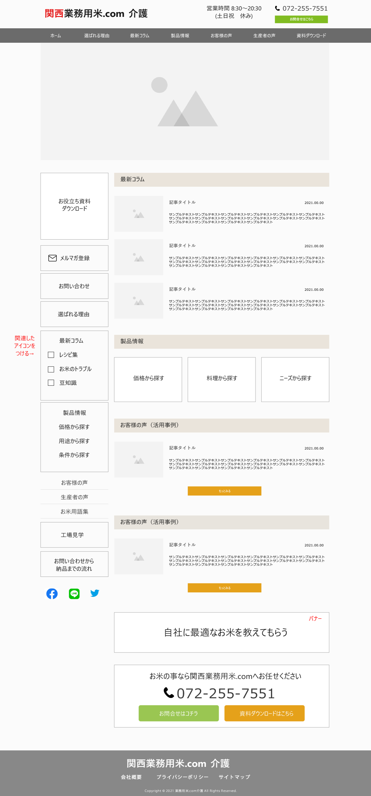

WORKS 04
| 題材 | 介護施設に特化した、お米のソリューションサイト(CrowdWorksにてコンペ参加) |
|---|---|
| 担当 | TOPページのデザイン |
| 制作期間 | 2日間(16時間) |
| ターゲット層 | 介護施設の管理栄養士（主に女性） |
| 発注者からの提供素材及びご希望 |
|
| デザインアイデア |
|
| ワイヤーフレーム及びデザインカンプ |

|